Rio Paiva - second run on the Gorge
‘La indecisión es la llave a la
flexibilidad’
|
|
Rio Paiva - second run on the Gorge |
||
|---|---|---|---|---|
|
‘La indecisión es la llave a la
flexibilidad’ |
Paiva Gorge Second Run
Everyone enjoyed the Gorge run on the Paiva so much the first time around that we went back to run it again two days later. This time we had the pleasure of the company of Felipe, Rabi�o, and Jorge once again.
Here's Felipe on the first major rapid. He's switched from his usual Sniper to some kind of enormous boat in training for an extreme race on this section, scheduled for the day we were flying home.
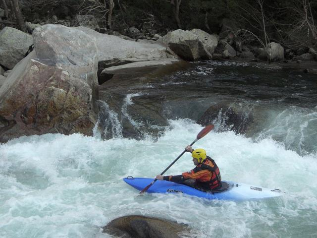
Mr. Fred on the same section.
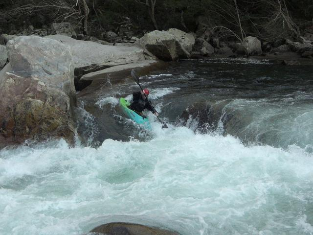
The following rapid had caused Jim some attention-paying-related difficulties on the previous run, so this time he did it by the book. High arm action, sequential linked forward strokes and all that.
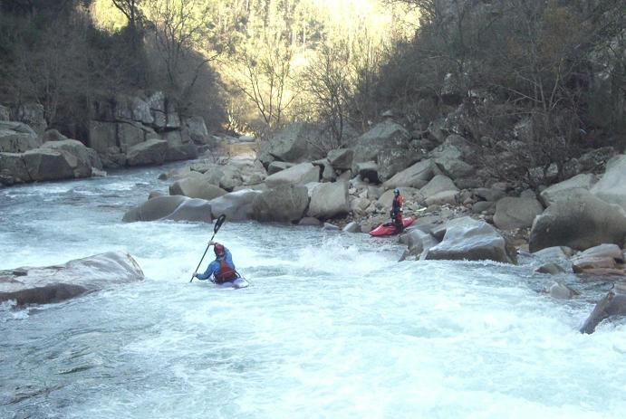
Ferg...
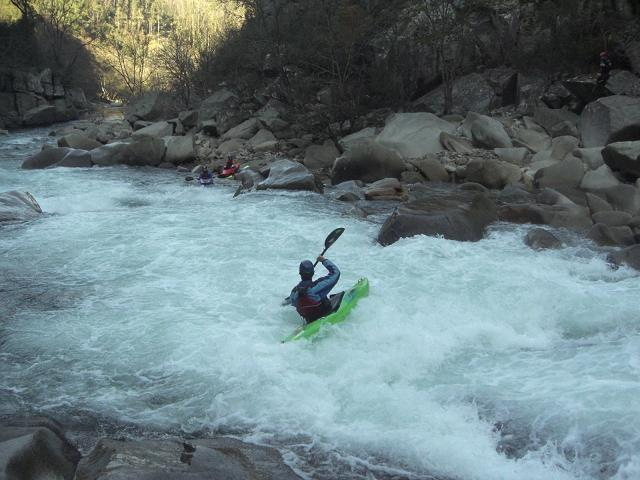
Rabi�o...
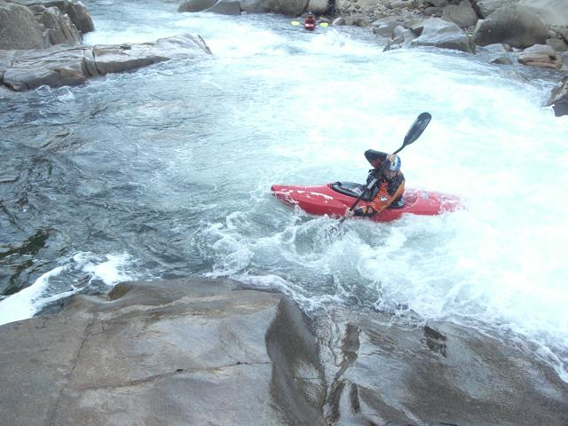
After that, it was back to the portage we had made on the previous occasion. With nothing looking significantly different this time around, we walked again. In bigger water there would be a clean boof on the right. At flows like this one, you would in all possibility cruise through there, but there's no way of knowing without a blind probe. How we missed Simon on this trip.
Here you can almost see the little cogs going round and round in Ferg's brain...
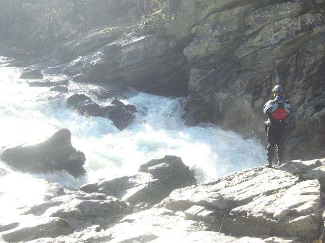
Rabi�o and Ferg putting back on below the drop...
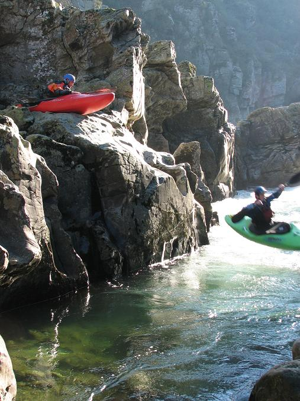
This is the section of the extreme race on the Paiva. The competition in the end was won by the Portuguese slalom champion. Here's Rabi�o, (as mentioned, he's a slalom paddler) showing how's it done.
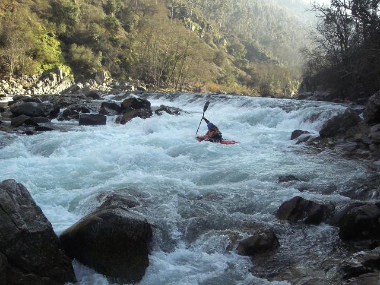
Catherine...
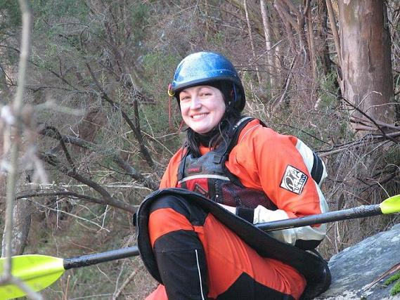
Back at the first major rapid, Jorge had banged up his ankle and had to get off at a rafting point about halfway down. We left him on the river bank with instructions to sit it out until we walked in for him, but by the time we drove up there, he'd already hiked out with his boat and found a beer. You can't keep a good man down.
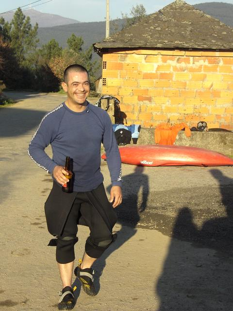
Give me Coffee and TV
They love their coffee in Portugal. This brand is claims to be 'the best Brasilian coffee.' Portugal maintains strong ties with it's former colony - we even picked up a random Brasilian hitchhiker one day.
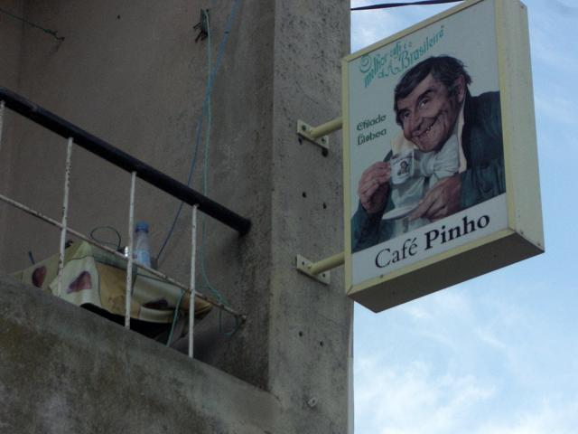
The finest Portuguese television program when we were there was a soap opera jointly made with Brasilian TV - set in both countries back in the slave trading days. All intensely overacted with heavy costumes, warring families presided over by stern patriarchs, with flighty young wans and chisel-jawed young men fighting over them. We couldn't understand a word but it was compulsive viewing. Since we don't have any video from this trip, here a clip of 'Paix�es Proibidas' ('Forbidden Passions'), introduced and explained for you by the lovely Ticiana Villas Boas:
Can't Access Paix�es? Really Are Net Inept?
Can Open Link In Next line:
Paix�es Proibidas